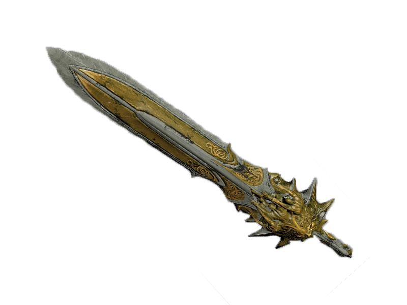
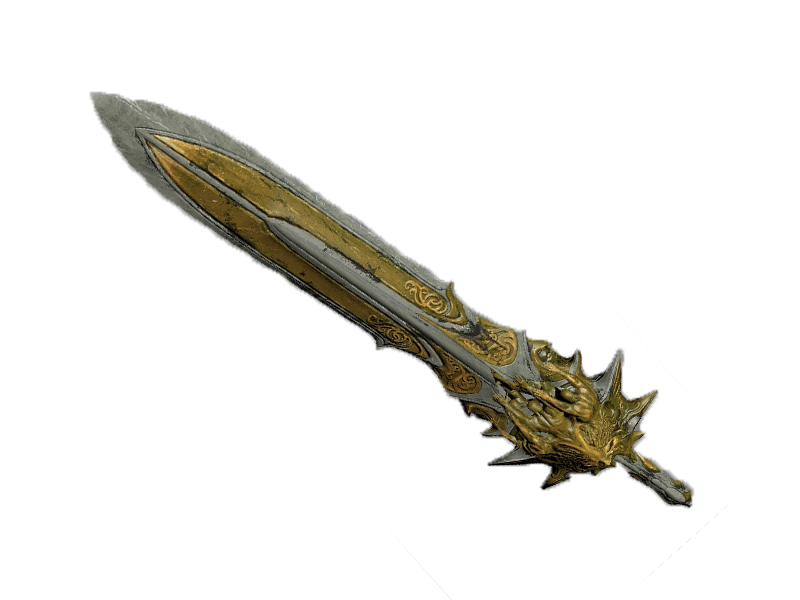

¿Eres digno de empuñar la hoja del olimpo?
Conoce la historia de su creación y propósito como arma divina.
En el siguiente video sabrás por que Kratos obtuvo la hoja del olimpo.
Conoce la historia de su creación y propósito como arma divina.
En el siguiente video sabrás por que Kratos obtuvo la hoja del olimpo.
La Espada del Olimpo es una gran espada de energía extremadamente poderosa que al llenarla de energía, desprende una luz azul brillante. Fue creada por Zeus, forjada de los Cielos y la Tierra durante la Gran Guerra para desterrar a los Titanes al Tártaro, y poner fin a la guerra de una vez por todas.
Esta arma fue utilizada por Kratos por primera vez en Rodas, cuando Kratos estaba destruyendo dicha ciudad para dar la victoria a los espartanos pero Zeus, le arrebata parte de sus poderes y le da vida al Coloso de Rodas, engañandole le entrega la espada para destruir el Coloso de Rodas y Kratos drena todo su poder de dios en ella, supuestamente, dando a Kratos la "fuerza para destruir a todos".
Después de un duro enfrentamiento Kratos finge rendirse, cuando Zeus va a decapitar a Kratos, se da la vuelta y clava las manos de Zeus en una piedra, asestándole varias puñaladas en el pecho, pero el Dios Olímpico se libera y cuando Kratos está a punto de asestarle el golpe final Atenea interfiere poniéndose entre la espada y Zeus, Kratos acaba matándola accidentalmente con la espada, en lugar de Zeus, mientras huye. Todo eso puso de manifiesto que la espada tiene la capacidad de dañar e incluso matar a los dioses.